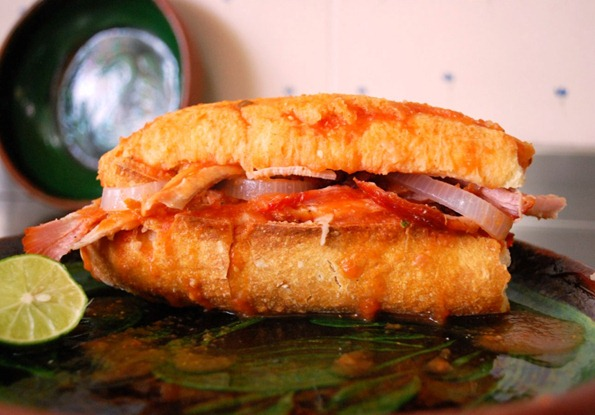

Torta Ahogada

Description
A delicious Guadalajara, Jalisco dish, the name literally translates
to 'drowned sandwich.' As you cna imagine, this meal can be messy and
is not for the sauce-scared!
Despite its simple construction, the flavors combine to be delicious.
The torta ahogada can be made as mild or mean as desired, by varying
the amount of peppers.
Ingredients
- 'Bolillo' style bread
- Tomatoes
- Peppers
- Vingear
- 'Carnitas' pork
- Red onion
- Garlic
- Lime
Steps
- Boil tomatoes and de-peel
- Blend tomatoes with garlic, onion, and spices
- Make spicy sauce by blending peppers with vingear and spices
- Tuck carnitas into split bolillo and douse with desired amount of sauce
- Top with raw onion and lime juice
Go back